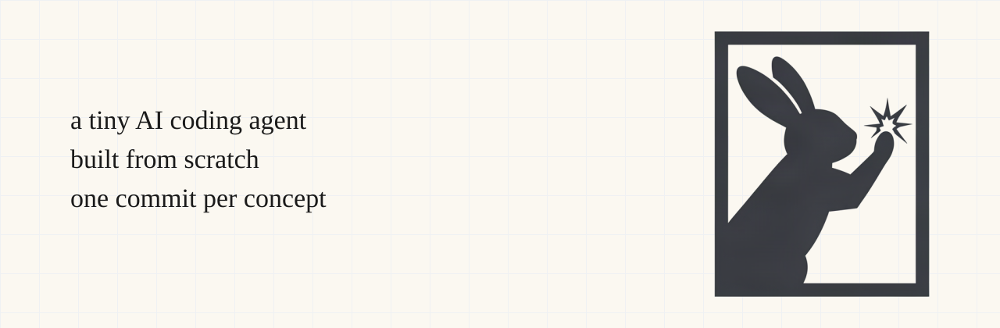

What's inside a coding agent?
Build one and see.
Claude Code, Cursor and Codex all run the same small loop: ask the model, run the tools it asks for, send back the results. petite builds it from scratch in 565 lines of Python, one concept per commit.
Here it is answering a question about its own code:
$ just run "How many Python files are in this project, and which one is the longest?"[agent] advertising 7 skill(s)[agent] turn 1: calling model with 2 message(s)[agent] executing Bash({'command': 'find . -type f -name "*.py" | head -20'})[agent] turn 2: calling model with 4 message(s)[agent] executing Bash({'command': 'find . -type f -name "*.py" --not -path "./.venv/*" | wc -l'})[agent] turn 3: calling model with 6 message(s)[agent] executing Bash({'command': 'find . -type f -name "*.py" -not -path "./.venv/*" | wc -l'})[agent] turn 4: calling model with 8 message(s)[agent] executing Bash({'command': 'find . -type f -name "*.py" -not -path "./.venv/*" -exec wc -l {} + | sort -rn'})[agent] turn 5: calling model with 10 message(s)**Results:** There are **4 Python files** in this project (excluding the virtual environment): 1. **./skills.py** - 268 lines (longest)2. **./tools.py** - 156 lines3. **./agent.py** - 96 lines4. **./main.py** - 45 lines The longest file is **`skills.py`** with 268 lines of code.
A real run with Claude Haiku 4.5. Lines starting with [agent] are petite's own log: each calling model is one round trip to the LLM; each executing runs on your machine. Note turn 2: the model passes a bad find flag, sees the error, and fixes it.
Who it's for
See what happens between your prompt and the edit.
Every piece, in plain Python. No framework.
A task, a hidden solution, a command that proves it.
What you'll understand by the end
- Why the model never touches your files, and what does instead.
- How tool calling works: JSON schemas go in, JSON tool calls come out.
- The agent loop, and why it's most of the trick.
- Skills: how agents load instructions only when a task needs them.
- Subagents: why a fresh conversation keeps the main one clean.
You'll need some Python, a terminal, and an OpenRouter key; the whole tutorial costs a few cents of credit.
How it works
One run of the agent: your prompt becomes messages, the model answers with text or a tool call, petite runs the tool on your machine and feeds the result back, until the model just answers. The badge on each part is the stage that builds it; click to jump there.
Setup
git clone https://github.com/tobiaschc/petite
cd petite
just setup
Needs uv and just.
just setup creates .env — fill in your OPENROUTER_API_KEY there, then:
just run "What does this project do?"
Any OpenAI-compatible endpoint works — override OPENROUTER_BASE_URL / MODEL.
Free models are listed at openrouter.ai/models
(slugs change — a 404 means pick a new one).
Replicate it yourself
Every stage is a tagged commit. The justfile wraps the git commands so you don't
have to remember tag names, and your checkout never leaves main:
# list every stage
just list
# a stage's exact code in .stages/08 (a git worktree)
just stage 8
cd .stages/08
just run "..." # runs stage 8's code, not main's
# diff two stages directly
just diff 8 9
# done exploring
just clean-stagesEach stage page below links to its code on GitHub too. Picking one concept, reading its diff, and reimplementing it from scratch is the fastest way to actually understand it — that's the whole point of this project.
Base agent
- 01Talk to an LLM
- 02Read tool
- 03Write tool
- 04Agent loop
- 05Bash tool
- 06Extract tools module
- 07Tool classes with Pydantic